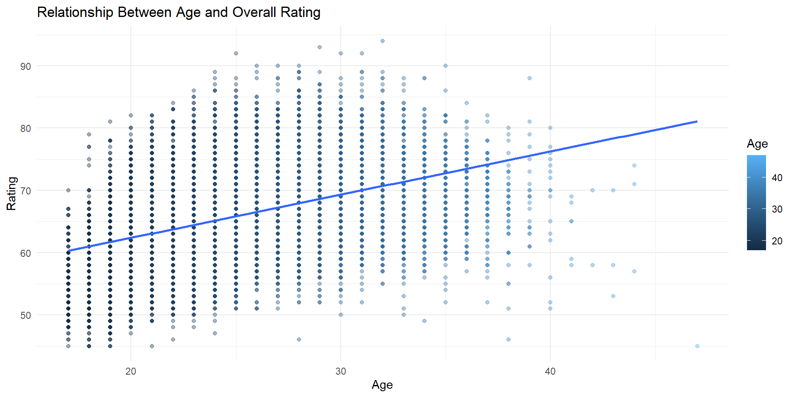
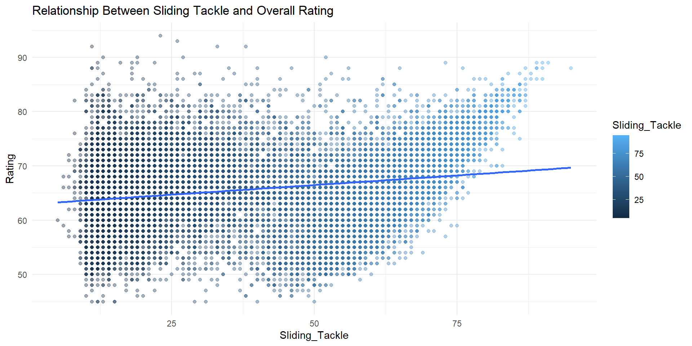

Which FIFA 17 Attributes Truly Predict Player Quality?
Chaminade University
2026-05-05
FIFA 17 uses a variety of different player factors to create an Overall Rating for every soccer player. These factors are made to model the real world, and try to do the best job and accurately describing a players abilities and influence within the sport. This brings us to the question, which factors/attributes play the biggest role in determining a players Overall Rating?
Which factors/attributes matter most for predicting a player’s Overall Rating?
Why it matters:
Understanding rating logic (why certain factors are more important then others)
Evaluating fairness and realism (to real world soccer)
context (like how a players club can help predict Rating)
I believe age will be a big factor in a players Overall Rating, as over time, as players get older they tend to get better. Although at a certain age players regress, I still believe it will be a big factor because in general, only the best continue to play at older ages. Technical skills like ball control, dribbling, and passing will likely have a major impact on a player’s Overall Rating because strong technical ability is important for every position. Shooting and defending should also matter a lot, attacking players are rated highly for their scoring ability, while defending is equally important since it makes up half the game.
The data set FullData.csv contains player information and statistics from FIFA 17, including each player’s Overall Rating and a variety of attributes. The data set was created and added to Kaggle by Ekrem Bayar.
The outcome variable in this analysis is Rating, which is a measure of each individual player’s overall ability in the game
Some key variables that I found in the list of attributes included Short_Pass, Long_Pass, Ball_Control, Dribbling, Standing_Tackle, and Finishing. I also considered Age, because I considered it a key component that can determine how good a player is.
Together, these variables capture qualities that influence a player’s overall rating.
Name Nationality National_Position National_Kit
Length:17588 Length:17588 Length:17588 Min. : 1.00
Class :character Class :character Class :character 1st Qu.: 6.00
Mode :character Mode :character Mode :character Median :12.00
Mean :12.22
3rd Qu.:18.00
Max. :36.00
NA's :16513
Club Club_Position Club_Kit Club_Joining
Length:17588 Length:17588 Min. : 1.00 Length:17588
Class :character Class :character 1st Qu.: 9.00 Class :character
Mode :character Mode :character Median :18.00 Mode :character
Mean :21.29
3rd Qu.:27.00
Max. :99.00
NA's :1
Contract_Expiry Rating Height Weight
Min. :2017 Min. :45.00 Length:17588 Length:17588
1st Qu.:2017 1st Qu.:62.00 Class :character Class :character
Median :2019 Median :66.00 Mode :character Mode :character
Mean :2019 Mean :66.17
3rd Qu.:2020 3rd Qu.:71.00
Max. :2023 Max. :94.00
NA's :1
Preffered_Foot Birth_Date Age Preffered_Position
Length:17588 Length:17588 Min. :17.00 Length:17588
Class :character Class :character 1st Qu.:22.00 Class :character
Mode :character Mode :character Median :25.00 Mode :character
Mean :25.46
3rd Qu.:29.00
Max. :47.00
Work_Rate Weak_foot Skill_Moves Ball_Control
Length:17588 Min. :1.000 Min. :1.000 Min. : 5.00
Class :character 1st Qu.:3.000 1st Qu.:2.000 1st Qu.:53.00
Mode :character Median :3.000 Median :2.000 Median :63.00
Mean :2.934 Mean :2.303 Mean :57.97
3rd Qu.:3.000 3rd Qu.:3.000 3rd Qu.:69.00
Max. :5.000 Max. :5.000 Max. :95.00
Dribbling Marking Sliding_Tackle Standing_Tackle Aggression
Min. : 4.0 Min. : 3.00 Min. : 5.00 Min. : 3.00 Min. : 2.00
1st Qu.:47.0 1st Qu.:22.00 1st Qu.:23.00 1st Qu.:26.00 1st Qu.:44.00
Median :60.0 Median :48.00 Median :51.00 Median :54.00 Median :59.00
Mean :54.8 Mean :44.23 Mean :45.57 Mean :47.44 Mean :55.92
3rd Qu.:68.0 3rd Qu.:64.00 3rd Qu.:64.00 3rd Qu.:66.00 3rd Qu.:70.00
Max. :97.0 Max. :92.00 Max. :95.00 Max. :92.00 Max. :96.00
Reactions Attacking_Position Interceptions Vision
Min. :29.00 Min. : 2.00 Min. : 3.00 Min. :10.00
1st Qu.:55.00 1st Qu.:37.00 1st Qu.:26.00 1st Qu.:43.00
Median :62.00 Median :54.00 Median :52.00 Median :54.00
Mean :61.77 Mean :49.59 Mean :46.79 Mean :52.71
3rd Qu.:68.00 3rd Qu.:64.00 3rd Qu.:64.00 3rd Qu.:64.00
Max. :96.00 Max. :94.00 Max. :93.00 Max. :94.00
Composure Crossing Short_Pass Long_Pass Acceleration
Min. : 5.00 Min. : 6.00 Min. :10.00 Min. : 7.0 Min. :11.00
1st Qu.:47.00 1st Qu.:38.00 1st Qu.:52.00 1st Qu.:42.0 1st Qu.:57.00
Median :57.00 Median :54.00 Median :62.00 Median :56.0 Median :68.00
Mean :55.85 Mean :49.74 Mean :58.12 Mean :52.4 Mean :65.29
3rd Qu.:66.00 3rd Qu.:64.00 3rd Qu.:68.00 3rd Qu.:64.0 3rd Qu.:75.00
Max. :94.00 Max. :91.00 Max. :92.00 Max. :93.0 Max. :96.00
Speed Stamina Strength Balance
Min. :11.00 Min. :10.00 Min. :20.00 Min. :10.00
1st Qu.:58.00 1st Qu.:57.00 1st Qu.:57.00 1st Qu.:56.00
Median :68.00 Median :66.00 Median :66.00 Median :65.00
Mean :65.48 Mean :63.48 Mean :65.09 Mean :64.01
3rd Qu.:75.00 3rd Qu.:74.00 3rd Qu.:74.00 3rd Qu.:74.00
Max. :96.00 Max. :95.00 Max. :98.00 Max. :97.00
Agility Jumping Heading Shot_Power
Min. :11.00 Min. :15.00 Min. : 4.00 Min. : 3.00
1st Qu.:55.00 1st Qu.:58.00 1st Qu.:45.00 1st Qu.:45.00
Median :65.00 Median :65.00 Median :56.00 Median :59.00
Mean :63.21 Mean :64.92 Mean :52.39 Mean :55.58
3rd Qu.:74.00 3rd Qu.:73.00 3rd Qu.:65.00 3rd Qu.:69.00
Max. :96.00 Max. :95.00 Max. :94.00 Max. :93.00
Finishing Long_Shots Curve Freekick_Accuracy
Min. : 2.00 Min. : 4.0 Min. : 6.00 Min. : 4.00
1st Qu.:29.00 1st Qu.:32.0 1st Qu.:34.00 1st Qu.:31.00
Median :48.00 Median :52.0 Median :48.00 Median :42.00
Mean :45.16 Mean :47.4 Mean :47.18 Mean :43.38
3rd Qu.:61.00 3rd Qu.:63.0 3rd Qu.:62.00 3rd Qu.:57.00
Max. :95.00 Max. :91.0 Max. :92.00 Max. :93.00
Penalties Volleys GK_Positioning GK_Diving
Min. : 7.00 Min. : 3.00 Min. : 1.00 Min. : 1.00
1st Qu.:39.00 1st Qu.:30.00 1st Qu.: 8.00 1st Qu.: 8.00
Median :50.00 Median :44.00 Median :11.00 Median :11.00
Mean :49.17 Mean :43.28 Mean :16.61 Mean :16.82
3rd Qu.:61.00 3rd Qu.:57.00 3rd Qu.:14.00 3rd Qu.:14.00
Max. :96.00 Max. :93.00 Max. :91.00 Max. :89.00
GK_Kicking GK_Handling GK_Reflexes
Min. : 1.00 Min. : 1.00 Min. : 1.0
1st Qu.: 8.00 1st Qu.: 8.00 1st Qu.: 8.0
Median :11.00 Median :11.00 Median :11.0
Mean :16.46 Mean :16.56 Mean :16.9
3rd Qu.:14.00 3rd Qu.:14.00 3rd Qu.:14.0
Max. :95.00 Max. :91.00 Max. :90.0
Doing some early EDA, here are some graphs with specific variables I chose that I thought may be good potential predictors for overall rating.


I used linear regression models to analyzed variables I thought could be good predictors based on my EDA.
Interpreting the output, when the Short_Pass attribute is 0 , then the Overall Rating is 52.53. For every one unit increase in Short_Pass, Overall Rating increases by approximately 0.2346 Ratings and it is statistically significant.
Call:
lm(formula = Rating ~ Short_Pass, data = my_data)
Residuals:
Min 1Q Median 3Q Max
-19.434 -3.965 -0.212 3.751 30.195
Coefficients:
Estimate Std. Error t value Pr(>|t|)
(Intercept) 52.532765 0.185767 282.79 <2e-16 ***
Short_Pass 0.234575 0.003095 75.79 <2e-16 ***
---
Signif. codes: 0 '***' 0.001 '**' 0.01 '*' 0.05 '.' 0.1 ' ' 1
Residual standard error: 6.15 on 17586 degrees of freedom
Multiple R-squared: 0.2462, Adjusted R-squared: 0.2462
F-statistic: 5744 on 1 and 17586 DF, p-value: < 2.2e-16Using linear regression I found that the factors with the greatest impact on Rating based on R-squared were Age, Short_Pass, Long_Pass, Ball_Control, Dribbling, and Finishing. These all combined also resulted in the model that best predicts Rating.
Call:
lm(formula = Rating ~ Age + Short_Pass + Long_Pass + Ball_Control +
Dribbling + Finishing, data = my_data)
Residuals:
Min 1Q Median 3Q Max
-25.3629 -3.5600 -0.3532 3.2276 29.1639
Coefficients:
Estimate Std. Error t value Pr(>|t|)
(Intercept) 38.775191 0.266338 145.587 < 2e-16 ***
Age 0.580421 0.009154 63.408 < 2e-16 ***
Short_Pass 0.112203 0.009007 12.458 < 2e-16 ***
Long_Pass 0.032342 0.006289 5.143 2.74e-07 ***
Ball_Control 0.158264 0.008808 17.969 < 2e-16 ***
Dribbling -0.094932 0.006605 -14.372 < 2e-16 ***
Finishing 0.009412 0.003863 2.436 0.0148 *
---
Signif. codes: 0 '***' 0.001 '**' 0.01 '*' 0.05 '.' 0.1 ' ' 1
Residual standard error: 5.408 on 17581 degrees of freedom
Multiple R-squared: 0.4173, Adjusted R-squared: 0.4171
F-statistic: 2098 on 6 and 17581 DF, p-value: < 2.2e-16
Call:
lm(formula = Rating ~ Age + Short_Pass + Long_Pass + Ball_Control +
Dribbling, data = my_data)
Residuals:
Min 1Q Median 3Q Max
-25.4525 -3.5594 -0.3694 3.2225 29.2172
Coefficients:
Estimate Std. Error t value Pr(>|t|)
(Intercept) 38.701519 0.264652 146.24 < 2e-16 ***
Age 0.583624 0.009060 64.42 < 2e-16 ***
Short_Pass 0.112458 0.009007 12.48 < 2e-16 ***
Long_Pass 0.028840 0.006123 4.71 2.5e-06 ***
Ball_Control 0.162232 0.008657 18.74 < 2e-16 ***
Dribbling -0.088439 0.006044 -14.63 < 2e-16 ***
---
Signif. codes: 0 '***' 0.001 '**' 0.01 '*' 0.05 '.' 0.1 ' ' 1
Residual standard error: 5.409 on 17582 degrees of freedom
Multiple R-squared: 0.4171, Adjusted R-squared: 0.4169
F-statistic: 2516 on 5 and 17582 DF, p-value: < 2.2e-16Analysis of Variance Table
Model 1: Rating ~ Age + Short_Pass + Long_Pass + Ball_Control + Dribbling +
Finishing
Model 2: Rating ~ Age + Short_Pass + Long_Pass + Ball_Control + Dribbling
Res.Df RSS Df Sum of Sq F Pr(>F)
1 17581 514158
2 17582 514332 -1 -173.58 5.9354 0.01485 *
---
Signif. codes: 0 '***' 0.001 '**' 0.01 '*' 0.05 '.' 0.1 ' ' 1Using linear regression I found that the factors with the greatest impact on Rating based on R-squared were Age, Short_Pass, Long_Pass, Ball_Control, Dribbling, and Finishing. These all combined also resulted in the model that best predicts Rating.
Call:
lm(formula = Rating ~ Age * (Short_Pass + Long_Pass + Ball_Control +
Dribbling), data = my_data)
Residuals:
Min 1Q Median 3Q Max
-32.121 -3.446 -0.361 3.146 29.641
Coefficients:
Estimate Std. Error t value Pr(>|t|)
(Intercept) 22.450949 0.815922 27.516 < 2e-16 ***
Age 1.212802 0.031295 38.754 < 2e-16 ***
Short_Pass 0.141080 0.047319 2.981 0.00287 **
Long_Pass 0.075098 0.033574 2.237 0.02531 *
Ball_Control 0.599378 0.045689 13.119 < 2e-16 ***
Dribbling -0.312097 0.032346 -9.649 < 2e-16 ***
Age:Short_Pass -0.001030 0.001817 -0.567 0.57087
Age:Long_Pass -0.001742 0.001284 -1.357 0.17481
Age:Ball_Control -0.017060 0.001762 -9.681 < 2e-16 ***
Age:Dribbling 0.008763 0.001248 7.024 2.23e-12 ***
---
Signif. codes: 0 '***' 0.001 '**' 0.01 '*' 0.05 '.' 0.1 ' ' 1
Residual standard error: 5.33 on 17578 degrees of freedom
Multiple R-squared: 0.4339, Adjusted R-squared: 0.4336
F-statistic: 1497 on 9 and 17578 DF, p-value: < 2.2e-16
Call:
lm(formula = Rating ~ Age + Short_Pass + Ball_Control * Dribbling,
data = my_data)
Residuals:
Min 1Q Median 3Q Max
-26.9660 -2.6957 -0.1292 2.4608 25.5232
Coefficients:
Estimate Std. Error t value Pr(>|t|)
(Intercept) 5.682e+01 2.924e-01 194.34 <2e-16 ***
Age 4.524e-01 7.527e-03 60.10 <2e-16 ***
Short_Pass 1.686e-01 5.290e-03 31.87 <2e-16 ***
Ball_Control -1.549e-01 7.890e-03 -19.64 <2e-16 ***
Dribbling -6.295e-01 7.670e-03 -82.08 <2e-16 ***
Ball_Control:Dribbling 9.072e-03 9.837e-05 92.23 <2e-16 ***
---
Signif. codes: 0 '***' 0.001 '**' 0.01 '*' 0.05 '.' 0.1 ' ' 1
Residual standard error: 4.443 on 17582 degrees of freedom
Multiple R-squared: 0.6066, Adjusted R-squared: 0.6065
F-statistic: 5423 on 5 and 17582 DF, p-value: < 2.2e-16The best interactions were between dribbling/ball control and ball control/finishing
Analysis of Variance Table
Model 1: Rating ~ Age + Short_Pass + Long_Pass + Ball_Control + Dribbling +
Finishing
Model 2: Rating ~ Age + Short_Pass + Long_Pass + Ball_Control + Dribbling
Res.Df RSS Df Sum of Sq F Pr(>F)
1 17581 514158
2 17582 514332 -1 -173.58 5.9354 0.01485 *
---
Signif. codes: 0 '***' 0.001 '**' 0.01 '*' 0.05 '.' 0.1 ' ' 1My Mixed effects models is predicting Rating using Age, Short_Pass, and the interaction between Ball_Control and Dribbling, while allowing each position and similarly each club to have its own baseline (random intercept).
Linear mixed model fit by REML ['lmerMod']
Formula:
Rating ~ Age + Short_Pass + Ball_Control * Dribbling + (1 | Club_Position)
Data: my_data
REML criterion at convergence: 99382.1
Scaled residuals:
Min 1Q Median 3Q Max
-5.6444 -0.6157 -0.0280 0.5597 5.8796
Random effects:
Groups Name Variance Std.Dev.
Club_Position (Intercept) 4.452 2.110
Residual 16.502 4.062
Number of obs: 17588, groups: Club_Position, 30
Fixed effects:
Estimate Std. Error t value
(Intercept) 5.805e+01 4.994e-01 116.25
Age 3.549e-01 7.235e-03 49.05
Short_Pass 1.666e-01 5.031e-03 33.11
Ball_Control -1.756e-01 7.606e-03 -23.08
Dribbling -5.787e-01 7.219e-03 -80.16
Ball_Control:Dribbling 9.086e-03 9.707e-05 93.61
Correlation of Fixed Effects:
(Intr) Age Shrt_P Bll_Cn Drbbln
Age -0.393
Short_Pass -0.078 -0.107
Ball_Contrl -0.197 -0.003 -0.524
Dribbling -0.291 0.214 -0.029 -0.059
Bll_Cntrl:D 0.372 -0.142 0.023 -0.486 -0.749
fit warnings:
Some predictor variables are on very different scales: consider rescalingLinear mixed model fit by REML ['lmerMod']
Formula: Rating ~ Age + Short_Pass + Ball_Control * Dribbling + (1 | Club)
Data: my_data
REML criterion at convergence: 98275.7
Scaled residuals:
Min 1Q Median 3Q Max
-6.3987 -0.5989 0.0125 0.6018 5.2574
Random effects:
Groups Name Variance Std.Dev.
Club (Intercept) 7.372 2.715
Residual 14.136 3.760
Number of obs: 17588, groups: Club, 634
Fixed effects:
Estimate Std. Error t value
(Intercept) 5.261e+01 2.826e-01 186.17
Age 5.297e-01 6.756e-03 78.40
Short_Pass 1.124e-01 4.648e-03 24.17
Ball_Control -7.611e-02 6.913e-03 -11.01
Dribbling -4.129e-01 7.242e-03 -57.01
Ball_Control:Dribbling 5.889e-03 9.403e-05 62.64
Correlation of Fixed Effects:
(Intr) Age Shrt_P Bll_Cn Drbbln
Age -0.658
Short_Pass -0.057 -0.136
Ball_Contrl -0.274 0.014 -0.594
Dribbling -0.519 0.316 -0.075 -0.057
Bll_Cntrl:D 0.633 -0.246 0.115 -0.438 -0.802
fit warnings:
Some predictor variables are on very different scales: consider rescalingCompare the mixed effects models using AIC since it is not hierarchical like ANOVA
Then compare the best mixed effect model with the best interactive model using AIC